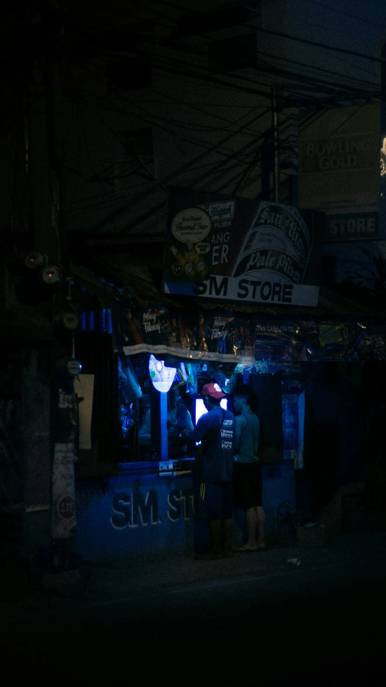

Blog
Practical guides for mission-driven teams.
Plain-language advice on websites, email and simple tools for churches, schools, nonprofits and small businesses in the Philippines.
How Nonprofits Can Send Donation Receipts and Show Donors Where the Money Went
Donors give, then hear nothing back. Here's how a nonprofit in the Philippines can send donation receipts and report where the money went — and earn repeat giving.
Read the article →Your Church Livestream Deserves More Than a Buried Facebook Post
Streaming Sunday service only to Facebook means members hunt for the link and the replay sinks down the timeline. Here's how to livestream services people can actually find.
How Your Small Business Can Take Bookings Online and Stop Playing Messenger Tag
Still booking clients through endless Messenger threads? Here's how your small business can take bookings online — fewer no-shows, less chaos, and no more replying at 11 p.m.
How Your School Can Take Enrollment Online and End the Long Lines
Enrollment season means long lines, paper forms, and late-night encoding. Here's how your school can take enrollment online — simpler for parents and staff alike.

How Nonprofits Can Organize Volunteers Without the Group-Chat Chaos
Coordinating volunteers through Messenger and Viber leads to no-shows and burnout. Here's how to set up simple volunteer sign-up and scheduling that actually holds.
How Your Church Can Receive Tithes and Offerings Online
Members want to give but rarely carry cash anymore. Here's how your church can receive tithes and offerings online through GCash, Maya, and bank — simply, and with trust.
Why Your Small Business Needs a Professional Email Address
Still quoting clients from a personal Gmail account? Here's why a professional email address builds trust with Filipino customers — and how fast it is to set up.
Why Your School Needs a Real Website, Not Just Facebook
Enrollment info buried in old Facebook posts leaves parents guessing. Here's why school website design in the Philippines matters, and where to start.

A Small Business Website That Gets You Found Online
Customers search Google and Facebook before they buy. Here's how a simple small business website in the Philippines helps them find, trust, and choose you.
Nonprofit Website Design That Earns Donor Trust
Donors decide whether to trust you before they give — often from your website in seconds. Here's what trustworthy nonprofit website design looks like, and how a credible site turns visitors into supporters.
How Schools Can Stop Answering the Same Questions All Day
The office phone rings all day with the same questions. Here's how a clear website and a simple chatbot can answer them accurately, around the clock, so staff can focus on families.
The Hidden Cost of Running Your Church From a Personal Gmail Account
A personal Gmail account might work for now, but it's quietly costing your church trust. Here's why — and how to set up a professional email address instead.

How a Website Transforms a Church Organization
A well-designed website does more than look good — it becomes your congregation's front door. Here's how churches use their site to reach further.
The Real Cost of Nonprofits Sticking with Spreadsheets
Spreadsheets feel free — until they start costing your nonprofit time, accuracy, and trust. Here's what's really behind the hesitation to go digital.

Modernizing Your School Without Overwhelming Your Staff
Schools don't fall behind because they don't care — they fall behind because every option feels like more work. Here's how to modernize without the overwhelm.
Boost Your Startup with a Single-Page Website
First impressions matter. Discover why a focused single-page site can outperform a complex multi-page website for early-stage startups.
What's Really Holding Small Businesses Back From Going Digital
It's not that owners don't see the value — they're too busy running the business to shop for, learn, and trust new tools. Here's what actually helps.
Our Partnership with Baptist Bible Seminary and Institute
A behind-the-scenes look at how we partnered with Baptist Bible Seminary and Institute to deliver a complete digital solution — from website to professional email.

Tell us what’s getting in the way.
A free 30-minute call. No pressure, no jargon — just a conversation.
or email customers@cortanatechsolutions.com